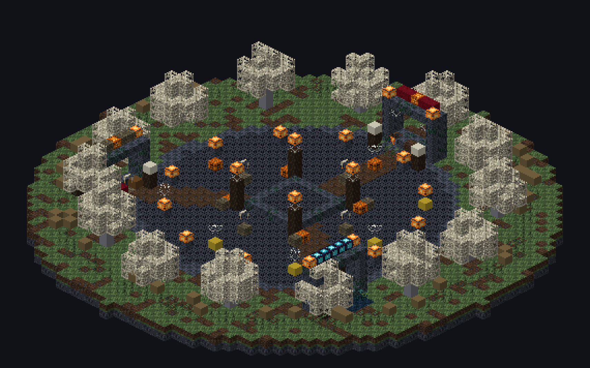
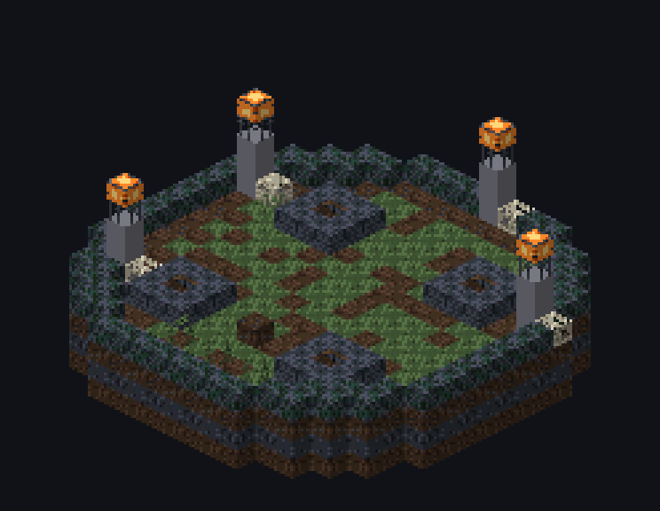
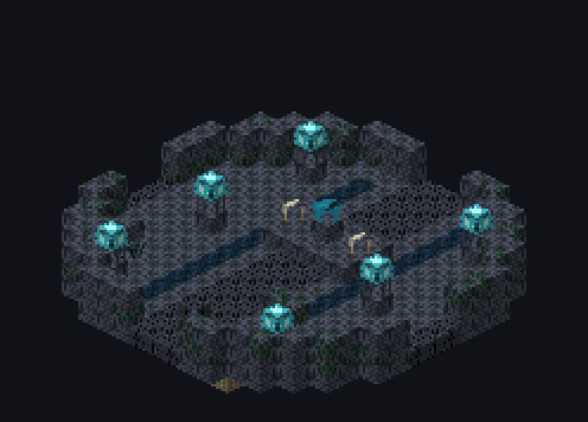
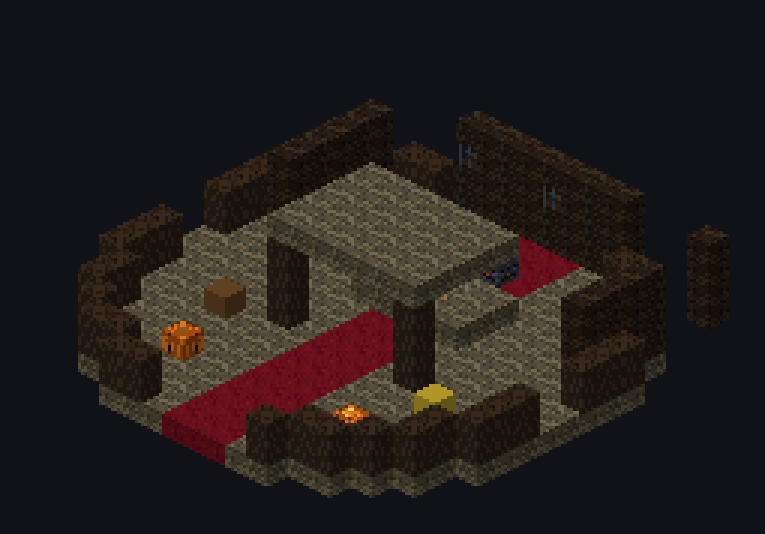
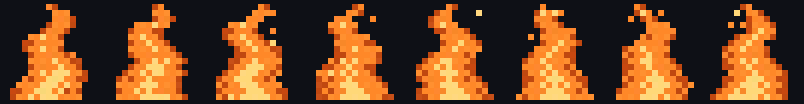
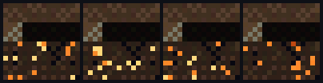
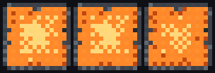
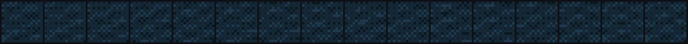
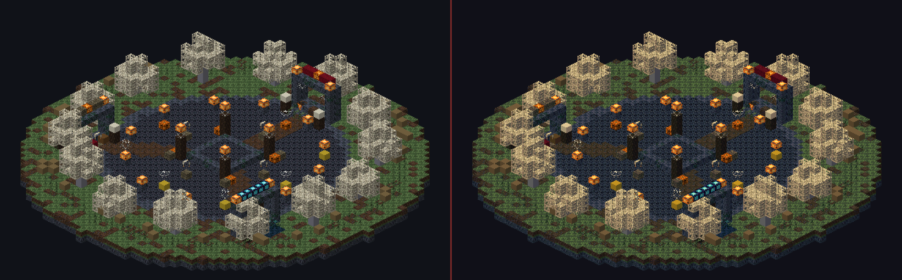

1 · Лобби 52×52, пол y=63, спавн у южных ворот
Круг из глубокого сланца с кирпичной каймой и тропинками к аркам. В центре — костёр-алтарь на каменном возвышении и четыре столба с висящими фонарями. По краю палый лес: бледные дубы, тыквы, паутина, черепа на кольях и тропинки.

2 · Комнаты ожидания 19×19, свои декорации у каждого режима
Раньше комната ожидания была пустым каменным квадратом. Теперь у каждого режима своя сцена, в которую игроки попадают ещё до старта.



3 · Анимации 8 текстур: лента 16×16·кадры + .png.mcmeta
Причина «мёртвого» костра была не в модели, а в паке: лежал один
кадр и не было .mcmeta, поэтому клиент считал текстуру статичной.
Теперь кадры нарезаны в ленту, а рядом лежит описание анимации.


interpolate:
угли тлеют плавно, без рывка.

4 · Встроенный core-шейдер shaders/core/lightmap.fsh
Фильтр лежит внутри ресурспака, поэтому включается сам при входе —
без Iris и OptiFine. Это lightmap, а не terrain: Sodium (Fabulously Optimized
и подобные сборки) запрещает переопределять terrain.*, а lightmap
сэмплит он сам — поэтому фильтр работает и с ним. Слева ванильная картинка,
справа та же после ps1_grade(): холодная луна, тёплые огни
и 5 бит на канал.

5 · Мир — пустота стена по кромке и возврат на спавн
Площадка больше не стоит посреди плоского каменного поля. Мир пустой,
площадь — остров: под мостовой три слоя камня, по кромке сплошное кольцо
невидимой стены (minecraft:barrier). Упал в пустоту — вернули
на спавн, а не в чёрное никуда. Генератора земли на сервере больше нет.
Проверки всё зелёное, без клиента и без Gradle
ok tools/build_offline.sh — 94 файла, 0 ошибок, SelfTest: 41 проверка
ok verify_26_3.py — 80 текстур, 8 анимаций (лента + mcmeta)
ok check_core_shaders.py — lightmap-шейдер объявляет ровно то же, что ванильный 26.3
ok check_keys.py — 59 ключей раскладки → настоящие блоки 26.3
ok verify_stubs.py — 66 типов, 216 членов, 0 расхождений